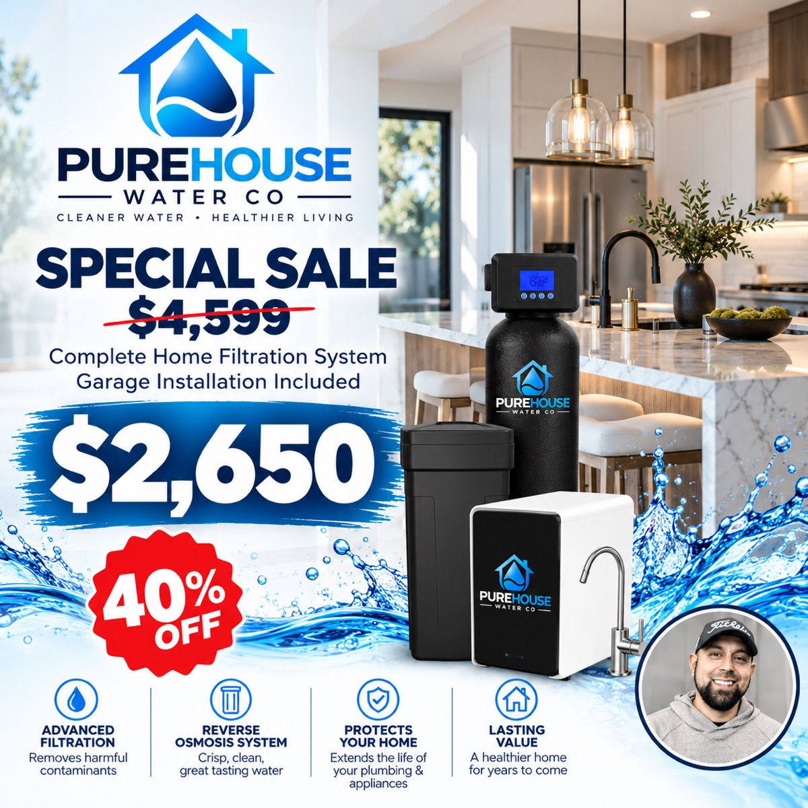
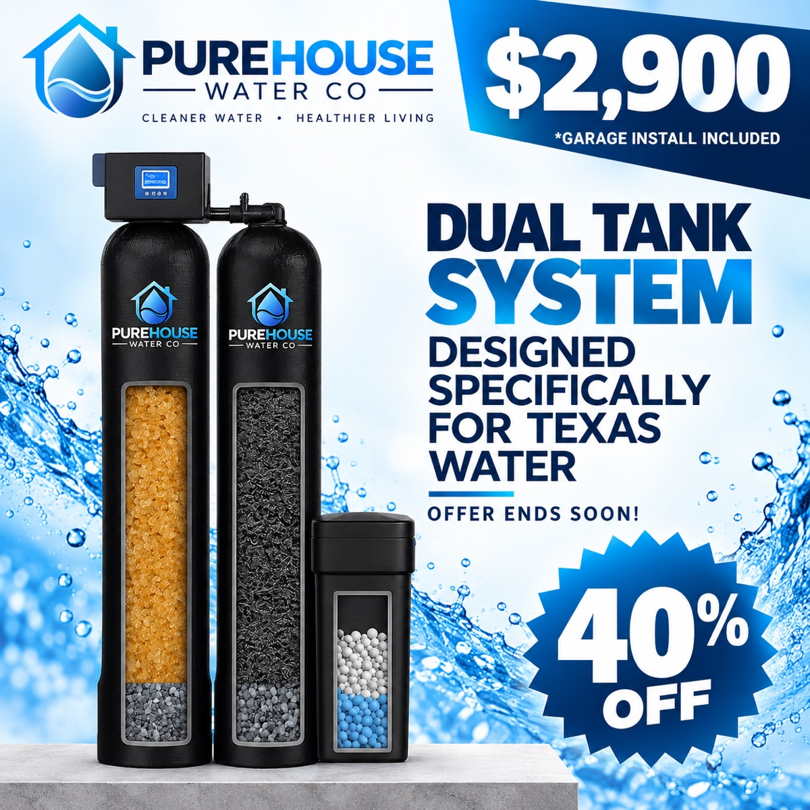

Water Softeners & Filtration in Keller, TX
Homes in Keller get their water from City of Keller. We'll test yours for free and show you exactly what's in it.
What to know about Keller water
Larger homes with more bathrooms, so properly sizing the softener matters.
Water can vary street to street, so a city-wide report only tells part of the story. Our free in-home test checks hardness, chlorine/chloramine, TDS and pH right at your kitchen sink.
Keller water at a glance
- Water utility
- City of Keller
- Water type
- City water
- County
- Tarrant County
Popular packages in Keller

Complete Home Filtration System
Whole-home water softener plus a reverse osmosis drinking water system — one package for the entire house.
- Whole-home water softener with smart digital control valve
- Reverse osmosis drinking water system with dedicated faucet
- Advanced filtration that removes harmful contaminants
- Protects your plumbing, fixtures & appliances
- Garage installation included

Dual Tank System
A two-tank softening and filtration system designed specifically for Texas water.
- Two dedicated treatment tanks for hardness and filtration
- Smart digital control valve
- Built for the hard, treated water common across North Texas
- Brine tank included
- Garage installation included
Free water test in Keller
Tell us a little about your home and we'll call you to set up a time.
- Free in-home water test
Results explained on the spot, yours to keep. - Garage installation included
Installed by our own local team. - No pressure, no obligation
We only recommend what your water needs.
Your details are only used to contact you about your water — we never sell your information. Privacy policy